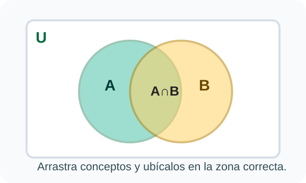
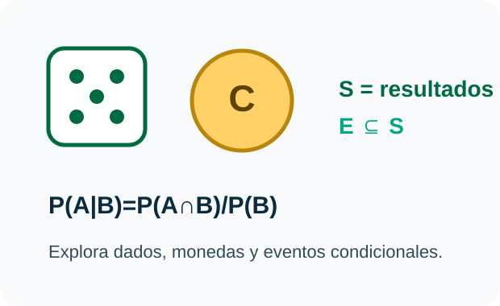
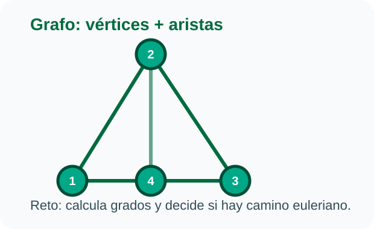

Conceptos difíciles
Los laboratorios ayudan a visualizar tablas de verdad, conjuntos, cadenas, probabilidad, binomial y grafos.
Objeto Virtual de Aprendizaje · Matemáticas Discretas
El OVA integra teoría, laboratorios, juegos, evaluación final, certificado, recursos de aula, manuales y paquete H5P/Lumi en una aplicación web estática lista para publicación.
Contexto académico
En Matemáticas Discretas muchos temas se vuelven abstractos si solo se trabajan desde definiciones o ejercicios estáticos. Este OVA convierte la teoría en práctica guiada, visual e interactiva para fortalecer el aprendizaje autónomo.
Los laboratorios ayudan a visualizar tablas de verdad, conjuntos, cadenas, probabilidad, binomial y grafos.
El estudiante puede experimentar con entradas propias y recibir retroalimentación inmediata.
Incluye manuales, paquete H5P, recursos de apoyo y una versión web publicable.
Solución propuesta
La aplicación no necesita backend ni instalación para ejecutarse. Todo vive en el navegador, por eso puede presentarse desde GitHub Pages o alojarse como sitio estático en Dokploy.

Simuladores para operar conjuntos, validar cadenas, calcular probabilidades y analizar grafos.

Autoevaluaciones, juegos, feedback inmediato, progreso local y evaluación final integradora.

Manual de usuario, manual técnico, manual de arquitectura y archivo H5P importable en Lumi.
Ruta de aprendizaje
Conectivos, condicional, bicondicional, tautologías, contradicciones y contingencias.
Pertenencia, subconjuntos, unión, intersección, complemento y conjunto potencia.
Longitud, reversa, potencia, prefijos, sufijos, subcadenas y validación formal.
Eventos, conteo equiprobable, casos favorables y probabilidad clásica.
Ensayos, éxitos, fracasos, combinatoria y distribución binomial.
Grados, listas, matrices de adyacencia y criterio euleriano.
Repositorio
Estos archivos permiten presentar el OVA, documentarlo y reutilizarlo en Lumi.
Guía de navegación y uso del OVA para estudiantes.
PDFPreparación del repo, validaciones y publicación estática.
PDFArquitectura, módulos, laboratorios, estado y generadores.
H5PVersión importable y editable del OVA en Lumi Desktop.
Hosting
Esta rama puede publicarse de forma independiente como página de presentación. La app principal del OVA puede permanecer en GitHub Pages, mientras esta landing vive en Dokploy.
Rama: ova-showcase-dokploy
Tipo: sitio estático
Directorio raíz: /
Build command: sin comando
Publish directory: /
Entrada: index.html
Demo: https://ova-discretas.argeworks.com/
Repositorio: https://github.com/GabitoMIX/ova-discretas